What's late, what's due and what's coming this week, and who each one is for.
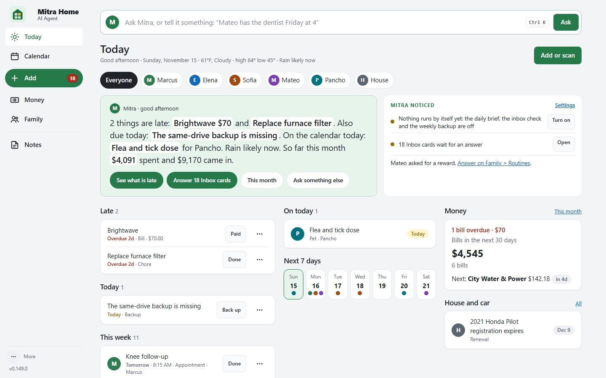
Bills, statements and school letters, with dates and amounts pulled out by the AI you choose.
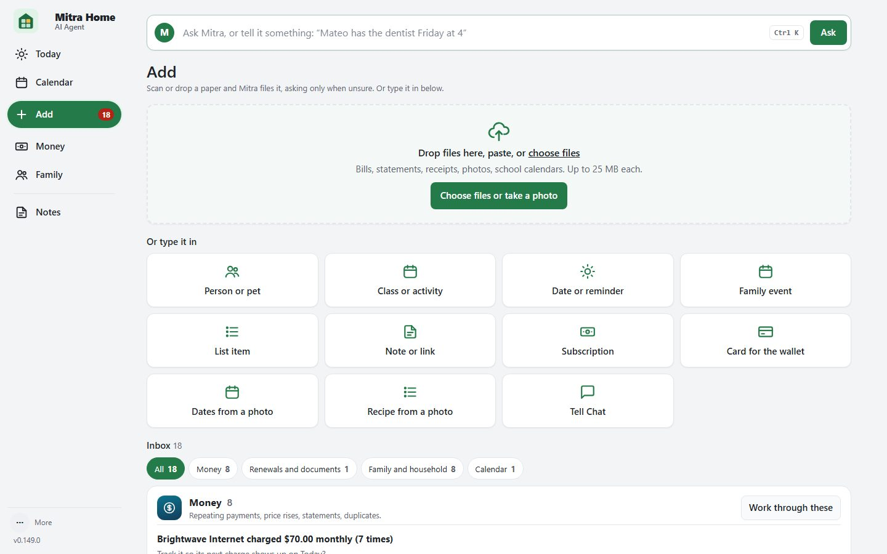
Appointments, classes, school days off and holidays.
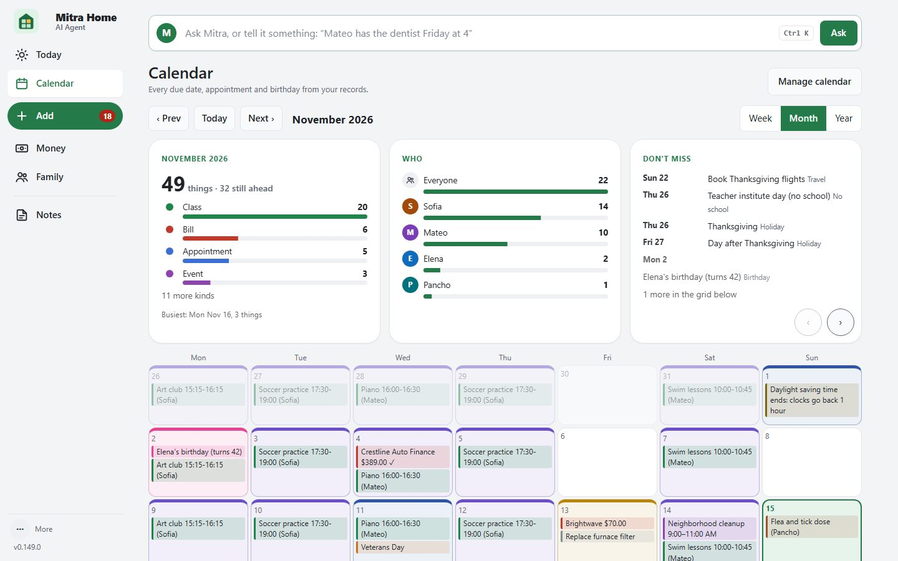
Bank, cards, investments, home and loans: what you have, what you owe, your net worth.
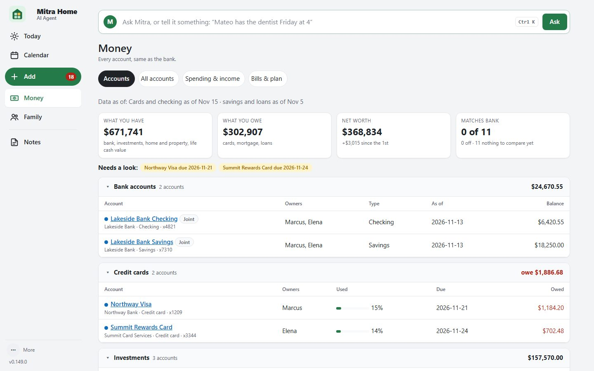
Each month against last month and last year.
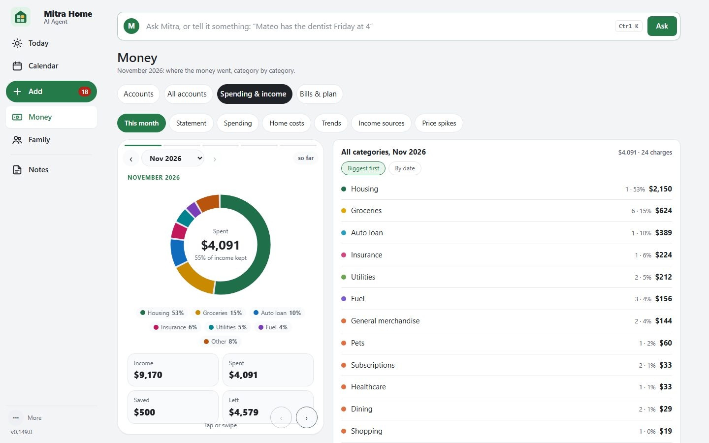
Cars, IDs, insurance, and the numbers you always look for.
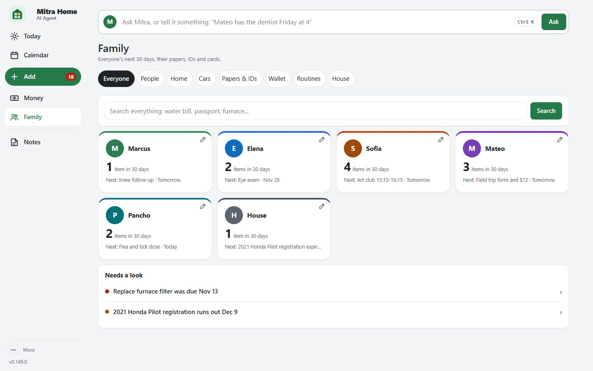
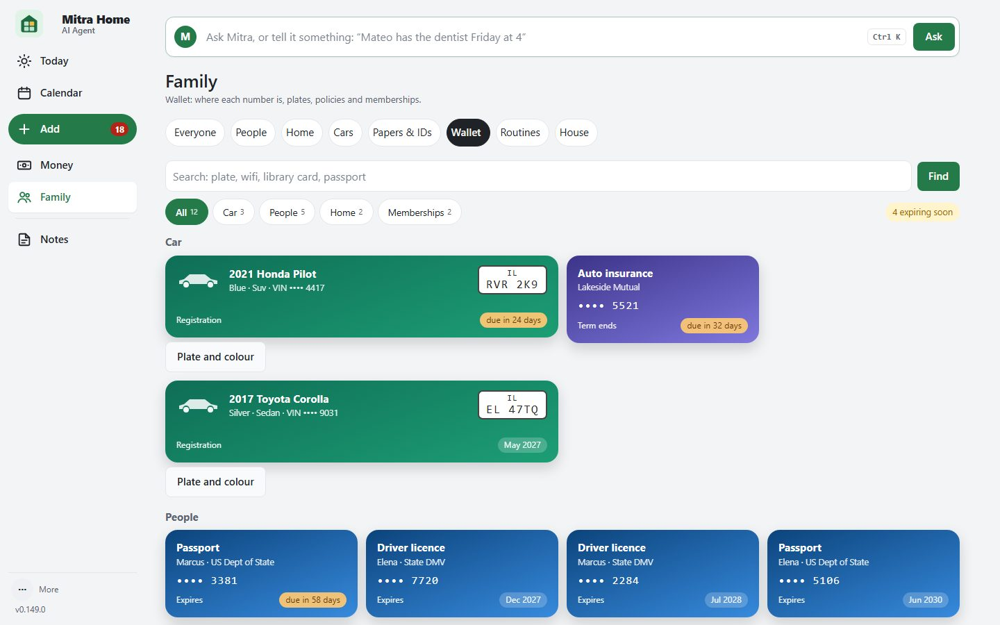
Check today, mark a bill paid, add an event. Syncs on home Wi-Fi.
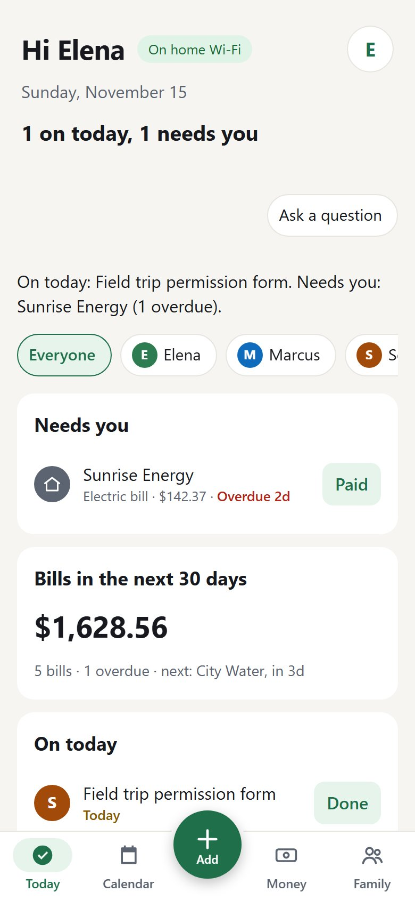
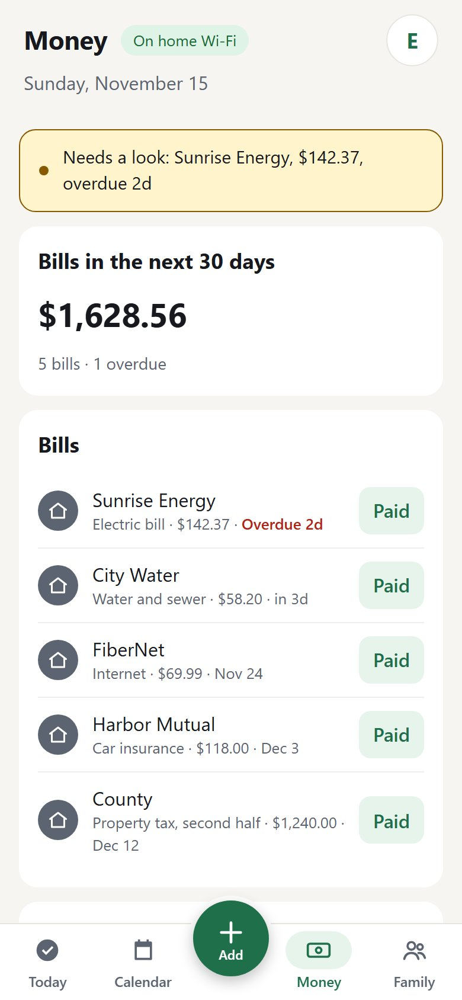
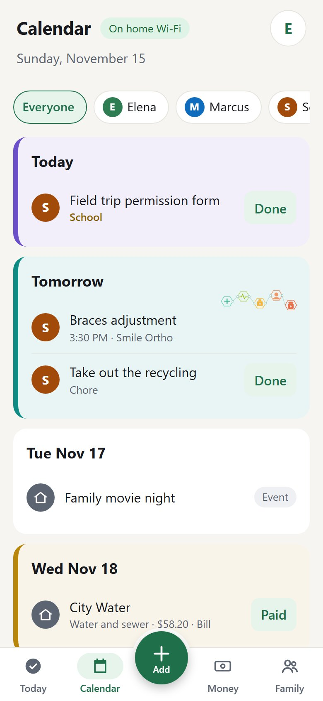
The week at a glance, the kids' jobs and stars, and what's for dinner.
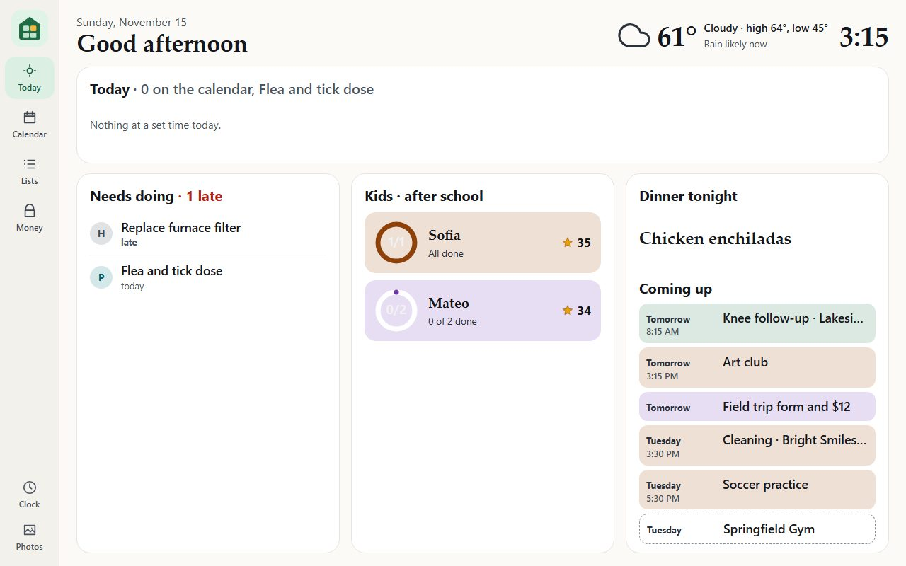
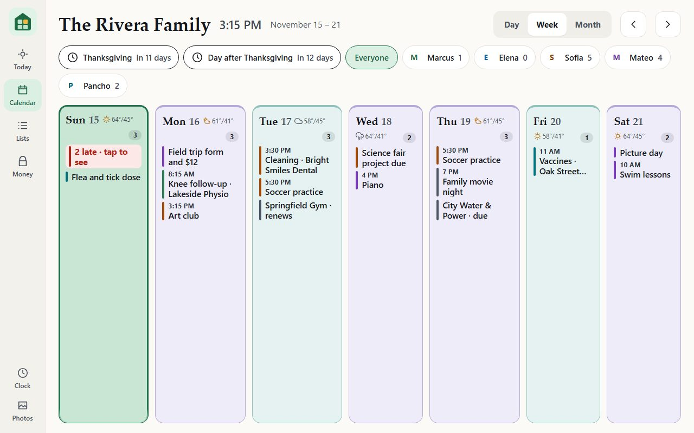
Pick a face, add your photos. At night it dims to a soft bedside clock.
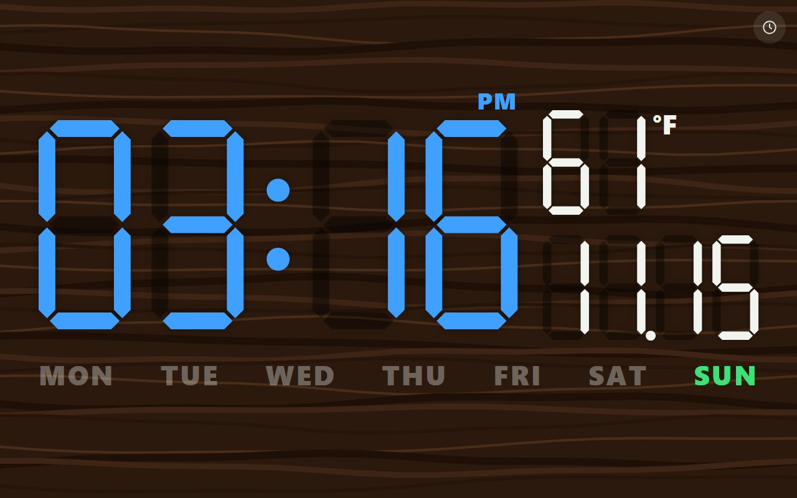
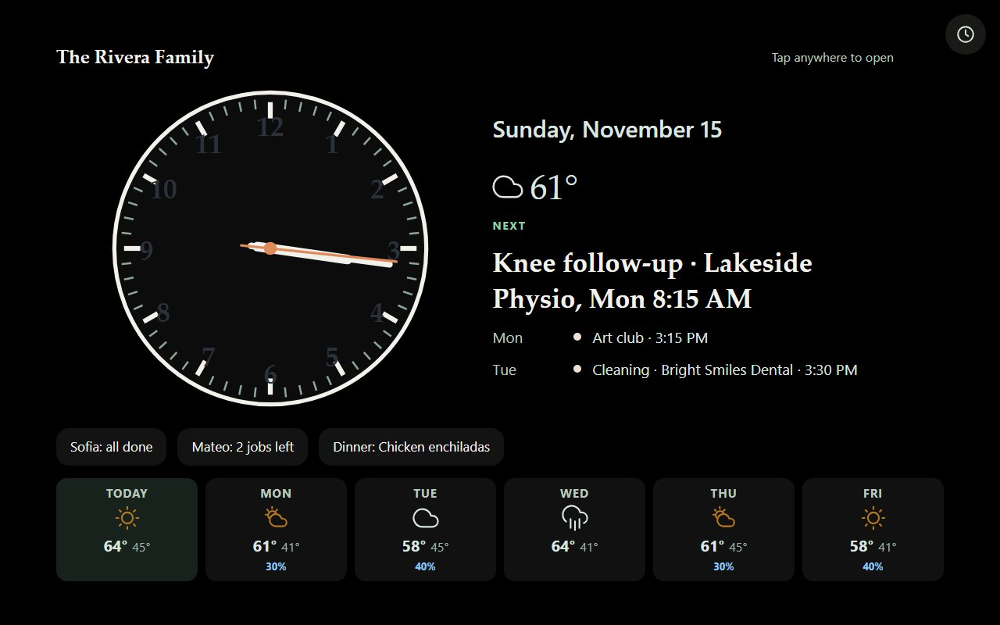
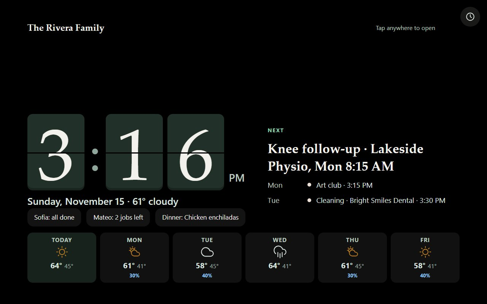
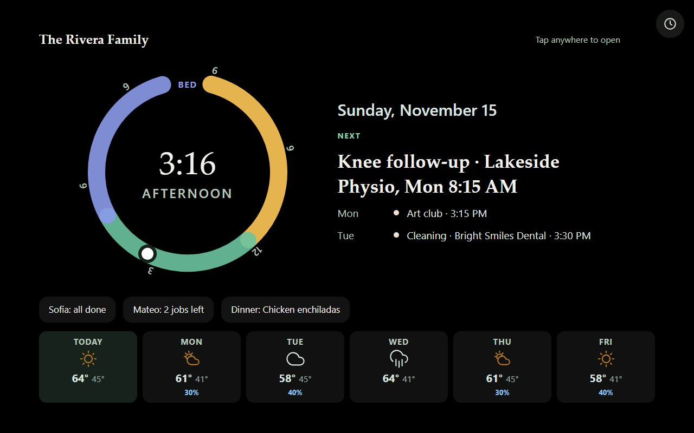
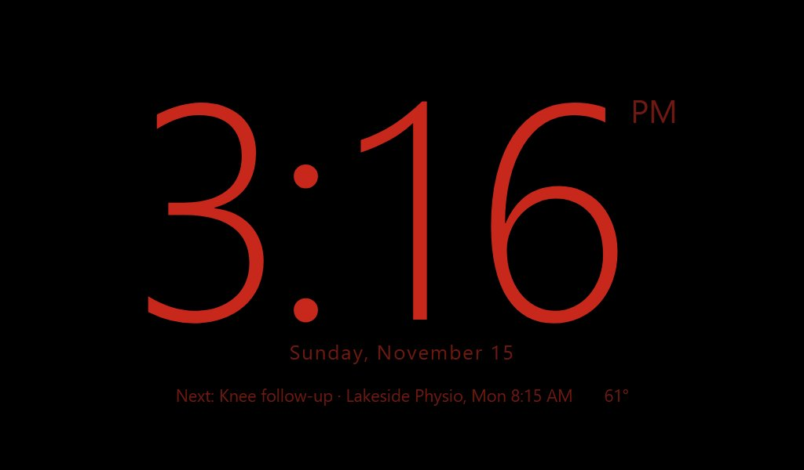